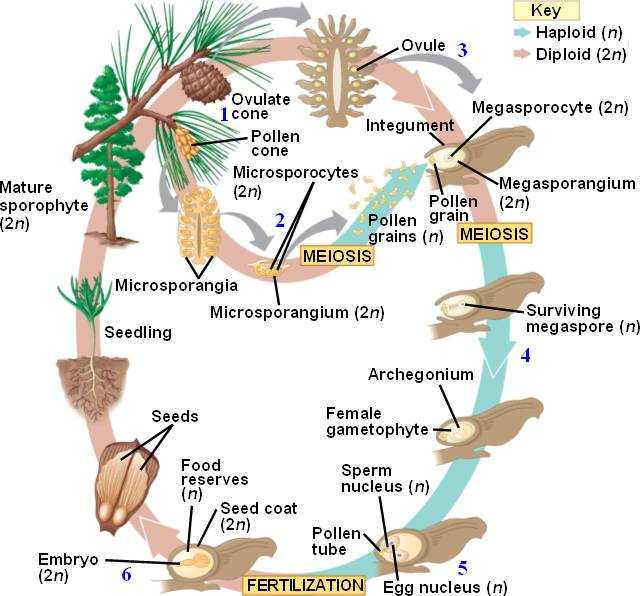
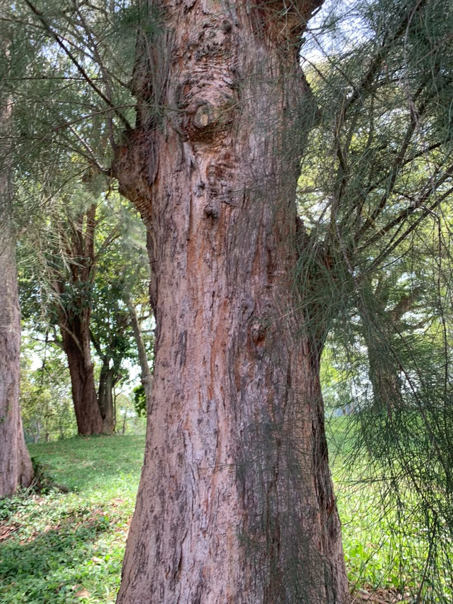

Problème résolu par les Conifères :
Chez les mousses et les fougères, la fécondation a encore besoin d'eau, ce qui limite ces plantes aux endroits humides.
Innovation apportée par les Conifères :
Le pollen, transporté par le vent, remplace l'eau pour la fécondation. La graine « nue » protège l'embryon et lui donne des réserves pour germer.


Cupressus
Ce sont des arbres ou des arbustes avec des racines, un tronc ligneux et des feuilles en aiguilles ou en écailles, souvent persistantes.
Schéma du cycle de reproduction des conifères
Les conifères se reproduisent par des graines nues, non enfermées dans un fruit. Leur reproduction se fait grâce à des organes appelés cônes ou strobiles. Les cônes mâles produisent le pollen, qui est transporté par le vent jusqu’aux cônes femelles. Après la pollinisation et la fécondation, les ovules se transforment en graines. Lorsque celles-ci sont mûres, elles sont libérées et peuvent germer pour donner naissance à un nouveau conifère.

Appareil végétatif des conifères